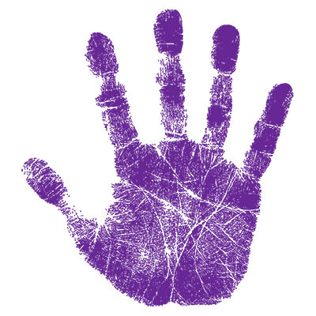

Sign Language Research
A central hub for accessing research documents, data, and important announcements in Sign Language studies.
Research Documents
Google Doc
Reference, objective, methodology, results, and limitations from the listed papers.
Google Sheet
List of research papers with DOI numbers
Google Drive
Research Literature review
Information Board

SCI-HUB Access
Find some closed-access research papers here.
Google Scholar
Search for open-access and indexed research articles.
AI model from Keras
A set of all-purpose models.
Datasets
Kaggle Datasets
Ishara-Lipi: Bangla Sign Language Dataset
Kaggle Datasets
Bangla Sign Language Video Dataset